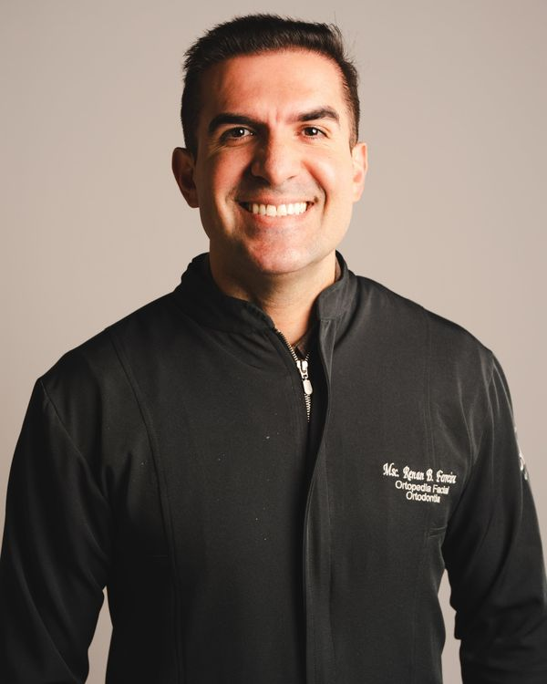

Odontopediatria no Gama – DF
Cuidado leve para os dentes do seu filho, do primeiro dentinho à adolescência
Consultas para bebês e crianças, prevenção, tratamento de cáries e traumas, com um especialista que sabe deixar o pequeno tranquilo na cadeira.
5,0 no Google · 121 avaliaçõesQuando levar
A primeira consulta deve ser no primeiro dentinho
A recomendação é levar a criança ao dentista quando nasce o primeiro dente, ou até completar 1 ano. Começar cedo evita problemas e faz a criança crescer vendo o dentista como alguém de confiança.
Procure o odontopediatra se a criança:
- Sente dor ou tem manchas nos dentesManchas brancas ou escuras podem ser o início de uma cárie.
- Bateu ou quebrou um denteEm traumas, quanto antes o atendimento, maior a chance de salvar o dente.
- Usa chupeta, chupa o dedo ou respira pela bocaEsses hábitos podem alterar a mordida e o crescimento do rosto.
- Tem dificuldade para mamar ou falarPode ser sinal de alteração no freio da língua.
O que fazemos
Tudo o que o sorriso do seu filho precisa em um só lugar
Consulta e prevenção
Limpeza, aplicação de flúor, selantes e orientação sobre escovação e alimentação.
Tratamento de cáries
Restaurações em dentes de leite e permanentes, com técnicas pensadas para crianças.
Traumas e urgências
Atendimento de dentes quebrados ou machucados, incluindo a colagem do fragmento quando possível.
Hábitos e mordida
Acompanhamento de chupeta, dedo e respiração bucal, com ortopedia funcional quando necessário.
Frenectomia
Avaliação e correção do freio da língua quando ele atrapalha a mamada, a fala ou a mastigação.
Laserterapia
Laser para aliviar feridas na boca e acelerar a recuperação após procedimentos.
Por que a Nature
Pensado para a criança se sentir segura
Sedação com óxido nitroso
Uma sedação leve e inalada, que deixa a criança relaxada e acordada, para quem tem muito medo.
Necessidades especiais
Atendimento adaptado com especialista, respeitando a rotina e o tempo de cada criança.
Ambiente para os pequenos
Um espaço acolhedor, preparado nos detalhes para receber crianças e deixar os pais tranquilos.
Quem atende

Dr. Renan
Mestre e especialista em Odontopediatria · Cofundador da Nature
Também é especialista em Ortodontia, Ortopedia Funcional dos Maxilares e atendimento a pacientes com necessidades especiais, e dá aulas na graduação e na pós-graduação. Nas avaliações dos pais, é lembrado pelo jeito leve e criativo com as crianças.
CRO-DF [NÚMERO]
O que dizem os pais
Avaliações reais do Google
“Precisei de um atendimento de urgência para o meu filho […] já na manhã seguinte, conseguiram nos atender por encaixe. Fomos atendidos pelo Dr. Renan, que foi extremamente atencioso, cuidadoso e profissional.”
“Minha pequena faz tratamento com Dr Renan, ele sempre muito cativante faz com que o tratamento se torne leve para uma criança com jeito criativo kkk.”
“Minha filha finalizou um tratamento com o Dr. Renan (que inclusive ela é apaixonada), ele é muito atencioso e cativa as crianças!”
Perguntas frequentes
Dúvidas dos pais sobre odontopediatria
Com que idade devo levar meu filho ao dentista pela primeira vez?
A recomendação é fazer a primeira consulta quando nasce o primeiro dente, ou até o primeiro ano de vida. Nessa visita, o odontopediatra orienta sobre higiene, alimentação e hábitos, antes de qualquer problema aparecer.
Por que tratar o dente de leite se ele vai cair?
Os dentes de leite ajudam a criança a mastigar, falar e guardam o espaço para os dentes permanentes. Uma cárie não tratada pode causar dor e infecção e prejudicar o dente que vem por baixo.
Meu filho tem medo de dentista. Como funciona o atendimento?
O atendimento é feito no tempo da criança, com explicações em linguagem que ela entende e um ambiente pensado para os pequenos. Quando o dentista indica, também é possível usar a sedação leve com óxido nitroso.
A sedação com óxido nitroso é segura para crianças?
O óxido nitroso é uma sedação leve, inalada por uma máscara no nariz, em que a criança fica relaxada e acordada durante o procedimento. O dentista avalia em consulta se ela é indicada para cada caso.
Vocês atendem crianças com necessidades especiais?
Sim. O Dr. Renan é especialista em atendimento a pacientes com necessidades especiais, e o tratamento é adaptado à rotina e ao ritmo de cada criança.
Vamos cuidar do sorriso do seu filho?
Chame no WhatsApp e agende a avaliação com o Dr. Renan.